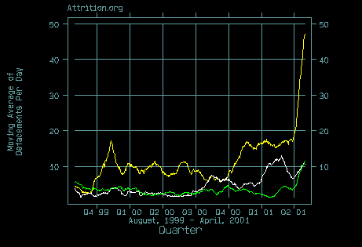
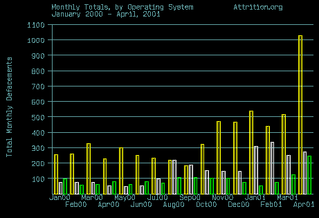
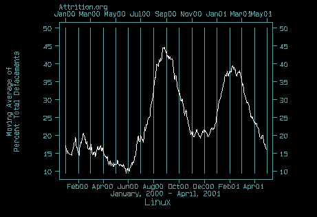
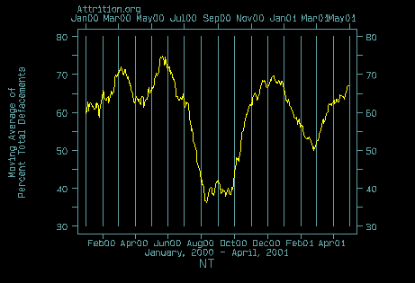
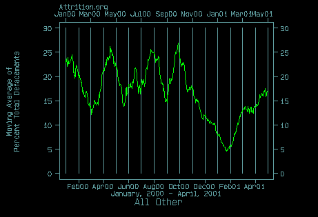
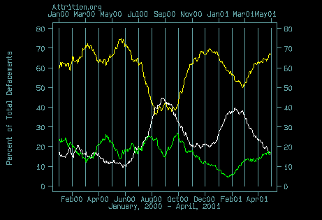
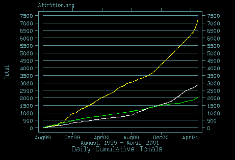

NT5-IIS/5.0: Just the beginning?
OS Totals by Month: Side by Side
August, 1999 through April, 2001
29 Day Moving Average of Defacements per Day, NT, Linux, All Others:

Yellow: NT, White: Linux, Green: All Others
Yellow: NT, White: Linux, Green: All Others
OS Totals by Month:
(click this image for OS proportions by month)

Yellow: NT, White: Linux, Green: All Others
Yellow: NT, White: Linux, Green: All Others
29-day moving average, Linux:

29-day moving average, NT:

29-day moving average, All Others:

29-day moving average, All:

Yellow: NT, White: Linux, Green: All Others
Daily Cumulative Totals, All:

Yellow: NT, White: Linux, Green: All Others
All OS results derived from NetCraft, nmap OS finger-printing, as well as from querying the remote web-server itself, at the time the mirror was taken. We are grateful for the NetCraft and nmap tools:
* "Linux" is represented by all of the Linux distributions.
* "NT" is NT and Windows 2000 (NT5).
* "All Others" are the aggregated totals of everything not Linux, NT,
or Windows 2000, and including all systems that we were not able to
determine an OS match. See our OS abbreviation section in our General
Information and Disclaimer page,
abbreviations for other OS identifications that we track.
If you're interested in a finer level break down, or don't find
the OS you're interested in here, we tabulate all of the OS's
found on the above mentioned abbreviation page on our
OS page.
For more information, contact: munge@attrition.org
© 2000-2001 Copyright Matt Dickerson for Attrition.org
Excerpts from this page may be reproduced if
Attrition and the URL
http://www.attrition.org/mirror/attrition/os-graphs.html are attributed.
Last modified: Sat May 5 19:59:29 EDT 2001
{kind=link}